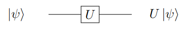

Section 1.9 Operators
In physics, things we are able to measure are called observables. Examples of observables are things like position, momentum, and energy, among many others. Any observables that relate to the quantum state of a particle have a corresponding operator. Operators are used to map vectors from one vector space onto another. An operator \(A\) that maps from a vector space \(V\) to a vector space \(W\) could be written as \(A: V \rightarrow W\text{.}\) In quantum computation, operators act on kets from the left side and on bras from the right side. For a ket \(\psi\) and a bra \(\phi\text{,}\) an operator \(A\) would act on them as follows
\begin{equation*}
A \cdot \ket{\psi} = A\ket{\psi}, \bra{\phi} \cdot A = \bra{\phi}A
\end{equation*}
Consider that \(A\) is not a scalar, but rather an operator maps between vector spaces, which means that these equations do not just represent basic multiplication. In quantum theory, operators can be represented by matrices, and tools like matrix multiplication and matrix addition (see Subsection 1.5.4) can be used to perform operations on qubits.
Subsection 1.9.1 Hermitian Operators
Recall from Subsection 1.7.3 that the adjoint operation represented by the \(\dagger\) symbol consisted of transposing and complex conjugating a vector. This same operation can be performed on an operator (note that operations and operators are two different things). An operator \(X\) is Hermitian (also referred to as adjoin) if it satisfies the following property:
\begin{equation*}
X = X^{\dagger}
\end{equation*}
Other properties of Hermitian operators are
Noncommutative
\begin{equation*}
XY \neq YX
\end{equation*}
Associative (multiplicative)
\begin{equation*}
XYZ = (XY)Z = X(YZ)
\end{equation*}
Hermitian Product
\begin{equation*}
(XY)^{\dagger} = Y^{\dagger}X^{\dagger}
\end{equation*}
Linear An operator \(L\) takes a vector \(\vec{v}\) and transforms it into a new vector \(L\vec{v}\text{.}\) If \(L\) is a linear operator, then
\begin{equation*}
L(\alpha \vec{v} + \beta \vec{w}) = \alpha L \vec{v} + \beta L \vec{w}
\end{equation*}
where \(\alpha, \beta \in \mathbb{C}\) and \(\vec{v},\vec{w} \in \mathcal{H}\)
Which of the following operators are Hermitian?
\begin{equation*}
1. \ \begin{pmatrix} 1 & 1 \\ 1 & 1 \end{pmatrix}
\end{equation*}
\begin{equation*}
2. \ \begin{pmatrix} 0 & -i \\ i & 0 \end{pmatrix}
\end{equation*}
\begin{equation*}
3. \ \begin{pmatrix} -i & 0 \\ 0 & i \end{pmatrix}
\end{equation*}
\begin{equation*}
4. \ \begin{pmatrix} 1 & 1+i \\ 1-i & 1 \end{pmatrix}
\end{equation*}
Solution.
1.
\begin{equation*}
\begin{pmatrix} 1 & 1 \\ 1 & 1 \end{pmatrix}^{\dagger} = \begin{pmatrix} 1 & 1 \\ 1 & 1 \end{pmatrix}
\end{equation*}
Since this matrix equals its adjoint, it is Hermitian
2.
\begin{equation*}
\begin{pmatrix} 0 & -i \\ i & 0 \end{pmatrix}^{\dagger} = \begin{pmatrix} 0 & -i \\ i & 0 \end{pmatrix}
\end{equation*}
Since this matrix equals its adjoint, it is Hermitian
3.
\begin{equation*}
\begin{pmatrix} -i & 0 \\ 0 & i \end{pmatrix}^{\dagger} = \begin{pmatrix} i & 0 \\ 0 & -i \end{pmatrix}
\end{equation*}
Since this matrix does not equal its adjoint, it is not Hermitian
4.
\begin{equation*}
\begin{pmatrix} 1 & 1+i \\ 1-i & 1 \end{pmatrix}^{\dagger} = \begin{pmatrix} 1 & 1+i \\ 1-i & 1 \end{pmatrix}
\end{equation*}
Since this matrix equals its adjoint, it is Hermitian
Subsection 1.9.2 Unitary Operators
Recall that for a qubit
\begin{equation*}
\ket{\psi}=\alpha \ket{0} + \beta \ket{1}
\end{equation*}
the property \(\alpha^2 + \beta^2 = 1\) must hold. After an operator \(U\) is applied to this qubit, we get a new state defined by
\begin{equation*}
U\ket{\psi} = \ket{\psi'} = \alpha'\ket{0} + \beta'\ket{1}
\end{equation*}
If the property that \(\alpha'^2 + \beta'^2 = 1\) still holds, then the operator \(U\) is unitary. Unitary operators map qubits between Hilbert spaces. A unitary operator ,\(U\) could be defined as \(U:\mathcal{H} \rightarrow \mathcal{H}\text{.}\) A defining property of unitary operators is
\begin{equation*}
U U^{\dagger} = U^{\dagger} U = I
\end{equation*}
where \(I\) is the identity matrix.
Unitary operations performed on a qubit are reversible. This means that for an operator \(U\) that acts on a qubit \(\ket{\psi}\) such that \(U\ket{\psi} = \ket{\psi'}\text{,}\) there exists some operator \(U^{-1}\) such that \(U^{-1}\ket{\psi'} = \ket{\psi}\text{.}\) This \(U^{-1}\) is called the inverse of \(U\text{.}\) Inverse matrices have the property that
\begin{equation*}
UU^{-1} = U^{-1}U = I
\end{equation*}
This means that for Unitary operators, the following property holds:
\begin{equation*}
U^{-1} = U^{\dagger}
\end{equation*}
Subsection 1.9.3 Additional Properties and Other
Recall from Section 1.9 that operators work on a ket from the left side and on a bra from the right side. Additionally, recall
\begin{equation*}
\ket{\psi}^{\dagger} = \bra{psi}
\end{equation*}
For an operator \(A\) acting on a ket \(\ket{\psi}\text{,}\) the adjoint is
\begin{equation*}
(A \ket{\psi})^{\dagger} = \bra{\psi}A^{\dagger}
\end{equation*}
and \(A^{\dagger}\) is another operator.
That is the extent to which we will discuss operators in this webbook, but readers wishing to extend their knowledge should go to this document
https://tinyurl.com/yzy4ycj5
Below is pictured a circuit diagram (which we will delve deeper into in Section 2.3) representing the action on a single Qbit of the 1-Qbit gate \(U\text{.}\) Initially the Qbit is described by the input state \(\ket{\psi}\) on the left of the line. The line (wire) represents the subsequent operation on the Qbit. After emerging from the box representing the operator \(U\text{,}\) the Qbit is described by the final state \(U \ket{\psi}.\)
